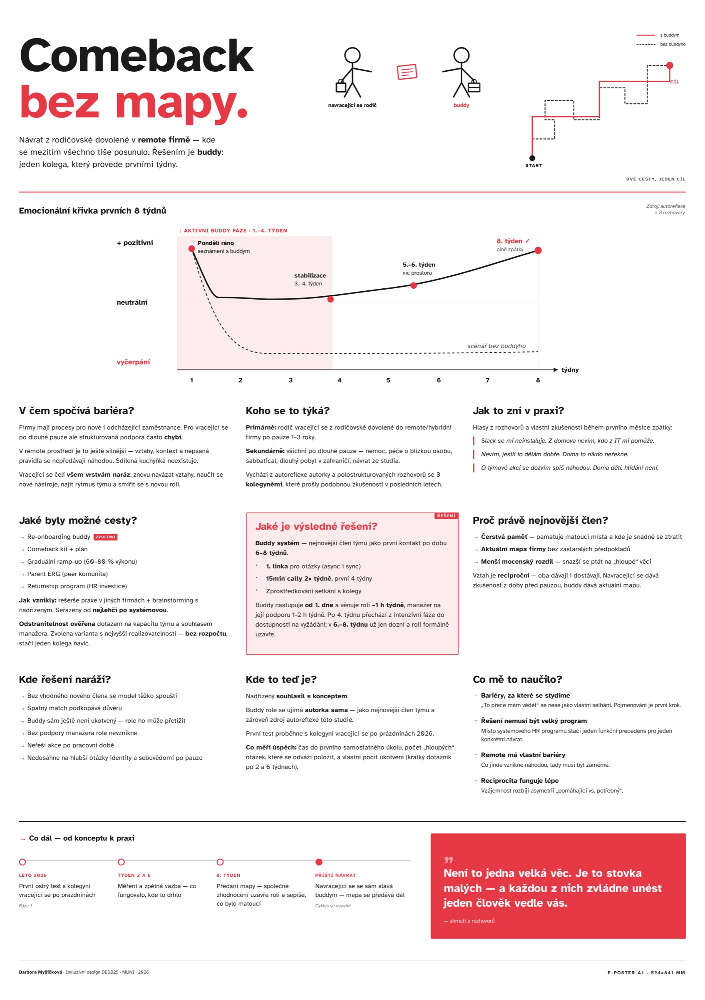

Návrat z rodičovské do remote firmy, kde se mezitím všechno tiše posunulo.
V rámci předmětu Inkluzivní design bylo cílem odstranit bariéru ze svého pracoviště nebo okolí. Vybrala jsem si návrat z rodičovské dovolené v remote firmě — situaci, kdy se vztahy, kontext i nepsaná pravidla mezitím tiše posunou. Z autoreflexe a tří rozhovorů jsem navrhla řešení „buddy“: jednoho kolegu, který vracejícího se provede prvními 6–8 týdny. Výstupem je e-poster s emoční křivkou prvních 8 týdnů, analýzou bariér a konceptem k otestování.
